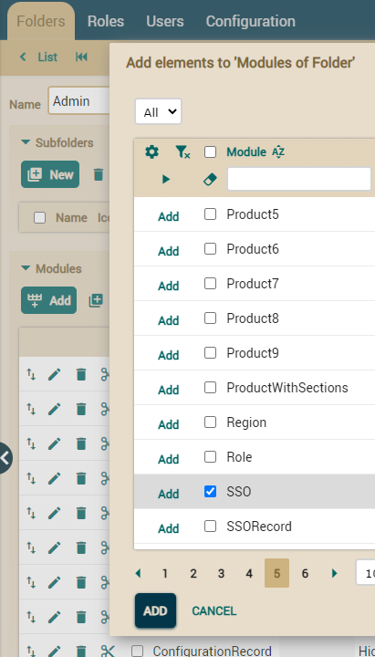

How to update your project to the latest OpenXava?
Edit the pom.xml file in your project and change the value of
the openxava.version property to point to the latest OpenXava
version, thus:
<properties>
<openxava.version>7.4.2</openxava.version>
...
</properties>
Rebuild your project:
- With OpenXava Studio:
- Right mouse button in your project > Run As > Maven clean
- Right mouse button in your project > Run As > Maven
install
- Or with command line: mvn clean package
Finally, revise the instructions
below to adapt your code.
Migration from OpenXava 7.4.2 to OpenXava 7.4.3
Hibernate
validator upgraded from 6.0.23.Final to 6.2.5.Final
We
have had to update the Hibernate Validator version due to a
vulnerability in versions prior to 6.2.0.Final. While testing indicates
it works smoothly without additional changes, there may be issues if you
use @SafeHtml or Expression Language for custom violations. For
more details, you can visit
Hibernate's official website.
Migration from OpenXava 7.4.1 to OpenXava 7.4.2
No issues.
Migration from OpenXava 7.4 to OpenXava 7.4.1
No issues.
Migration from OpenXava 7.3.3 to OpenXava 7.4
New row in PDF generated in list mode (for JUnit tests)
Now the PDFs generated in list mode have a new element that shows the
number of records present in the report. Therefore, if you check report
details in JUnit tests, you need to make some changes. Previously, it
was:
assertPopupPDFLinesCount(7);
assertPopupPDFLine(2, "Name");
Now it is:
assertPopupPDFLinesCount(8); // +1
assertPopupPDFLine(2, "Record count: 3"); // THIS NEW ROW WAS ADDED
assertPopupPDFLine(3, "Name");
New action in collections (for JUnit tests and custom actions)
Now collections will have a new action in the list and in each row, Collection.deleteSelected.
Therefore, if you check the actions present in the JUnit tests, it is
necessary to make some changes, adding the new action and in some cases,
removing Collection.removeSelected if the collection has (cascade=CascadeTYPE.REMOVE).
For example:
String [] actions = {
"Collection.new",
"Collection.edit",
"Collection.removeSelected", // REMOVE THIS ENTRY IF THE COLLECTION HAS CASCADE REMOVE
"Collection.deleteSelected" // ADD THIS ENTRY
};
assertActions(actions);
Similarly, if the collection has cascade delete, you must change the
action call to Collection.deleteSelected.
public void testDeleteElementInCollection() throws Exception {
....
execute("Collection.removeSelected", "row=0,viewObject=xava_view_humans"); // REMOVE
execute("Collection.deleteSelected", "row=0,viewObject=xava_view_humans"); // CHANGE FOR
...
}
New action in collections (for custom actions)
Collection.deleteSelected also affects if you have a
collection with (cascade=CascadeType.REMOVE) and @RemoveSelectedAction
customizing the Remove action.
In this case, you should change the @RemoveSelectedAction
annotation to @DeleteSelectedAction and also change the
extends of the action's class from RemoveSelectedInCollectionAction
to DeleteSelectedInCollectionAction. This is because with
cascade remove, the Collection.removeSelected action behaves
the same as Collection.deleteSelected and therefore the former
will not appear in the view.
@OneToMany (mappedBy="delivery", cascade=CascadeType.REMOVE)
@RemoveSelectedAction(forViews="DEFAULT, MoreSections", value="DeliveryDetail.removeSelected") // REMOVE
@DeleteSelectedAction(forViews="DEFAULT, MoreSections", value="DeliveryDetail.deleteSelected") // CHANGE FOR @DeleteSelectedAction,
// ACTION'S NAME IN CONTROLLER DOES NOT NEED TO BE CHANGED
private Collection<Detail> details;
public class DeleteSelectedDeliveryDetailsAction
extends RemoveSelectedInCollectionAction { // REMOVE
extends DeleteSelectedInCollectionAction { // CHANGE FOR
New row action in collections (for JUnit tests)
Now each row in the collection has a new action, CollectionOpenInNewTab.openInNewTab.
So if you test for all present actions in your JUnit tests, you have to
modify it and add the new action. For example:
String [] actions = {
"Collection.edit",
"CollectionOpenInNewTab.openInNewTab" // ADD THIS ENTRY
};
assertActions(actions);
Migration from OpenXava 7.3.2 to OpenXava 7.3.3
No issues.
Migration from OpenXava 7.3.1 to OpenXava 7.3.2
No issues.
Migration from OpenXava 7.3 to OpenXava 7.3.1
No issues.
Migration from OpenXava 7.2.3 to OpenXava 7.3
New actions in Collection controller
If you haven't overridden the Collection controller, you can
skip this step. Otherwise, you must manually add previous and
next actions to the controller:
<action name="next"
image="next.gif"
icon="skip-next"
class="org.openxava.actions.EditElementInCollectionAction">
<set property="openDialog" value="false"/>
<set property="nextValue" value="1"/>
</action>
<action name="previous"
image="previous.gif"
icon="skip-previous"
class="org.openxava.actions.EditElementInCollectionAction">
<set property="openDialog" value="false"/>
<set property="nextValue" value="-1"/>
</action>
New actions in Collection dialogs (for JUnit tests)
Now the dialogs from collections have two new actions, Collection.previous
and Collection.next. So if you test for all present actions in
your JUnit tests, you have to modify it and add the new ones. For
example:
String [] bottomActions = {
"Collection.save",
"Collection.hideDetail",
"Collection.next", // ADD THIS ENTRY
"Collection.previous" // ADD THIS ENTRY
};
assertActions(bottomActions);
JavaScript eval() no longer supported in JavaScript
If you have to write your own custom editors or views and you're using
you own JavaScript code, keep in mind the eval() is not longer
supported for security reasons. You have to rewrite your JavaScript code
to not use eval().
Anyways, if you're using a third party library or the amount of code to
rewrite is huge and your application does not required high security
standards, you can enable the support of eval() for your
OpenXava application adding the next entry to your xava.properties
file:
unsafeEvalInScripts=true
Migration from OpenXava 7.2.2 to OpenXava 7.2.3
No issues.
Migration from OpenXava 7.2.1 to OpenXava 7.2.2
No issues.
Migration from OpenXava 7.2 to OpenXava 7.2.1
No issues.
Migration from OpenXava 7.1.6 to OpenXava 7.2
Inline events are no longer supported in editors and custom views
If you have to write your own custom editors or views and you're using
onclick, onfocus, onblur, etc., they will no longer work. The href="javascript:
" don't work either. This is for security reasons. You need to
remove the HTML events and move them to a JavaScript file.
That is, if you have code like this in your editor:
<a class="ox-card"
onclick="openxava.executeAction('<%=request.getParameter("application")%>', '<%=request.getParameter("module")%>', false, false, '<%=action%>', '<%="row=" + (i++)%>');">
Remove the onclick event, leaving it like this:
<a class="ox-card" data-action="<%=action%>" data-row="<%=i++%>">
Note that we've added data- attributes to store dynamic data
that used to be in inline JavaScript, so we can read these attributes
from our JavaScript code later.
Next, add a JS file, let's call it cardEditor.js (if the JSP
editor is named cardEditor.jsp), in the src/main/webapp/xava/editors/js
directory of your project (create the folder if it doesn't exist yet),
with the following content:
openxava.addEditorInitFunction(function() {
$('.ox-card').off('click').click(function() {
openxava.executeAction(openxava.lastApplication, openxava.lastModule, false, false,
$(this).data('action'), "row=" + $(this).data('row'));
});
});
Notice how we use the class, .ox-card in this case, to add the
event using JavaScript code. We also use data() to retrieve the
values of the data attributes we've stored in the HTML element.
This code is secure because it is downloaded from the server hosting the
application.
Upgraded JavaScript libraries jQuery and jQuery UI
jQuery has been updated to version 3.7.1 from 1.11.2, and jQuery UI to
version 1.13.2 from v1.11.2. This update has been made for security
reasons. If you only use the user interface generated by OpenXava, you
don't have to do anything. However, if you have custom views or your own
editors that use jQuery, you should take a look at the jQuery
3 upgrade guide. You may need to make some adjustments.
Including JavaScript files from JSP in custom editors or views no
longer works
This is for security reasons. Normally, the JavaScript used in custom
editors or custom views is included in the xava/editors/js
folder, and in this case, no changes need to be made. However, on some
occasions, the JavaScript file has been included in the editor or view
directly. If this is the case, you have several options.
The best alternative is to remove the <script> from the
JSP and copy your JS file to the xava/editors/js folder.
If this is not possible, because, for example, the JS is generated
dynamically by a servlet, the solution is to remove the <script>
from the JSP and to add an openxava.getString() in the JS file
of your editor. For instance, for the Discussion editor, we have
a discussion.js located in xava/editors/js where we have
the code:
openxava.getScript(openxava.contextPath + "/dwr/interface/Discussion.js");
If you editor or custom view has no a JS file yet, just create one and
put it in xava/editors/js, no matter that by now its sole
function is to load another JS.
The last option is to keep the <script> in the JSP and to
add a nonce attribute to it. In other words, if in the JSP code
of your editor or view, you have something like this:
<script type='text/javascript' src='<%=contextPath%>/dwr/interface/Discussion.js?ox=<%=version%>'></script>
You should change it to:
<script type='text/javascript' <xava:nonce/> src='<%=contextPath%>/dwr/interface/Discussion.js?ox=<%=version%>'></script>
Note the <xava:nonce/> we have added. Although this
option is the fastest to implement, the two JavaScript ways mentioned
above work better.
Migration from OpenXava 7.1.5 to OpenXava 7.1.6
No issues.
Migration from OpenXava 7.1.4 to OpenXava 7.1.5
No issues.
Migration from OpenXava 7.1.3 to OpenXava 7.1.4
No issues.
Migration from OpenXava 7.1.2 to OpenXava 7.1.3
HtmlUnit upgraded from 2.70 to 3.3 (for JUnit tests)
We have had to upgrade to the latest HtmlUnit version because of a
critical security vulnerability in 2.x versions. If you use the
methods of ModuleTestBase in your tests you don't need to
change anything. However, if you use the HtmlUnit API directly, using
getHtmlPage() or getWebClient() in your tests, you have
to do some migration adjustments.
Follow the instructions
from HtmlUnit documentation to migrate from HtmlUnit 2.x.x to 3.x.x.
Migration from OpenXava 7.1.1 to OpenXava 7.1.2
No issues.
Migration from OpenXava 7.1 to OpenXava 7.1.1
No issues.
Migration from OpenXava 7.0.6 to OpenXava 7.1
Inline style in HTML no longer allowed
This is for security reasons. It means that you have to move the
style from HTML to CSS in your custom views, editors, formatters,
servlets, etc.
For example, if you have this HTML code:
<div style="padding: 20px; background-color: green;">
The style part is no longer recognized. Now, you have to
change style by a class:
<div class="my-background">
And add the class to your CSS file (your theme CSS or custom.css):
.my-background {
padding: 20px;
background-color: green;
}
Also you can change the style by other classic HTML tags, like <b><i>
or <font>. Especially when you need to use some dynamic
value, like a color from a database. For example, you could change
this Java code that generates HTML:
return "<i class='mdi mdi-square' style='color: " + colorHexValue + "'></i>";
By this:
return "<font color='" + colorHexValue + "'><i class='mdi mdi-square ox-color-inherit'></i></font>";
Note the use of <font> to indicate the color. In this
case we also use ox-color-inherit class (included in OpenXava)
to overwrite the color given by OpenXava CSS to <i>
elements.
Servlets require explicit type content
This is for security reasons. Your servlets require to set the
content type explicitly. So, if you don't do so, you have to add the
next line to your servlerts:
response.setContentType("text/html");
You have to indicate the corresponding mime type, in this example
"text/html" for a HTML document.
Inline JavaScript in JSP requires nonce attribute
This is for security reasons. You rarely are using inline JavaScript
in your code in OpenXava applications, given that they do not work
since OpenXava 3.1 for editors or custom views. However, if you have
custom code outside a regular OpenXava module, like welcome.jsp,
or some custom header or footer for your application, maybe you have
some inline scripts, in this case you have to add an attribute nonce
to your inline script using the new <xava:nonce/>
taglib.
For example, if your welcome.jsp page has this code:
<script type="text/javascript">
var button = document.getElementById('welcome_go_signin');
button.onclick = function () { window.location='m/SignIn'; }
</script>
You should change it by:
<%@include file="../xava/imports.jsp"%>
...
<script type="text/javascript" <xava:nonce/>>
var button = document.getElementById('welcome_go_signin');
button.onclick = function () { window.location='m/SignIn'; }
</script>
Note the new <xava:nonce> element, and that you have to
include imports.jsp.
Still better, you could look for an alternative that does not use
inline script at all. In this case, for example, we could change the onclick
event with a window.location by a plain <a ref="" />,
if possible.
Inline events in HTML elements are no longer allowed
Inline events still work in custom editors and views in v7.1;
however, if you have custom code outside a regular OpenXava module,
such as welcome.jsp, you may have inline events like onclick,
onfocus, onblur, etc., that will no longer work. This is for
security reasons. You need to remove the HTML events and move them to
a JS file.
That is, if you have a code like this:
<input type="button" tabindex="1" onclick="window.location='m/SignIn'" value="<xava:label key='SignIn'/>">
Remove the onclick and add an id to the element, leaving it
in this way:
<input id="welcome_go_signin" type="button" tabindex="1" value="<xava:label key='SignIn'/>">
Then add a JS file, let's say events.js (or whatever name you
prefer), in src/main/webapp/xava/editors/js (create the folder
if it does no exist yet) of your project, with the next content:
var button = document.getElementById('welcome_go_signin');
button.onclick = function () { window.location='m/SignIn'; }
Note as we use the id to add the event using JavaScript code, a
secure code because it's downloaded from the server that hosts the
application.
IForwardAction no longer can be used to execute JavaScript
Given the new security restrictions it's not possible to redirect to
JavaScript, so if you use IForwardAction to redirect to a URL
starting with javascript: to execute code, that is not going
to work. To execute JavaScript use IJavaScriptPostAction
instead. That is, if you have an action like this:
public class SayHelloAction extends BaseAction implements IForwardAction {
public void execute() throws Exception {
}
public String getForwardURI() {
return "javascript:alert('Hello')";
}
public boolean inNewWindow() {
return false;
}
}
Rewrite it in this way:
public class SayHelloAction extends BaseAction implements IJavaScriptPostAction {
public void execute() throws Exception {
}
public String getPostJavaScript() {
return "alert('Hello')";
}
}
Labels in English now have different order (for JUnit tests)
We noticed that labels in list and collection when are translated to
English, they can be understandable, but could be better. For this, we
changed the order of the words and this affect JUnit code that use
method like assertValue(), assertLabelInList(),
assertValueInCollection(), and more that used to verify labels.
For example, if you have something like this:
assertLabelInList(0, "Year of invoice");
Change it by:
assertLabelInList(0, "Invoice year");
If labels were before:
customer.address = Address of customer
customer.address.street = Street of address of customer
customer.address.street.number = Number of street of address of customer
Now they are:
customer.address = Customer address
customer.address.street = Customer address street
customer.address.street.number = Customer address street number
Reloading page needed to use CSS in tests (for JUnit tests)
Given that inline style has been moved to CSS now sometimes it's
required you to reload the page in order that CSS works correctly, so if
you activate CSS for your test you must do a
reload() after it.
In this way:
getWebClient().getOptions().setCssEnabled(true); // If you do this then...
reload(); // ...you have to add this line
Curiously, adding reload()
is not always needed, just add it where you find that tests with CSS
start to fail.
New action in references and @DescriptionsList (for JUnit tests)
References and
@DescriptionsList have new action for the users (
Reference.clear),
so if you test for all present actions in your JUnit tests, you have to
modify it and add
Reference.clear. For example:
String [] actions= {
"CRUD.new",
"CRUD.save",
"CRUD.refresh",
"Mode.list",
"Reference.search",
"Reference.createNew",
"Reference.modify",
"Reference.clear", // ADD THIS ENTRY
"Sections.change"
};
assertActions(actions);
Tomcat 8.x requires a minimum Java 8 compilation level
If you are using Tomcat 8.x for your production applications, you need to
set the JSP page compilation level to at least 1.8. To do this, edit the
web.xml
file in the
conf folder of your Tomcat, locate a servlet named
jsp,
and add the following parameters:
<servlet>
<servlet-name>jsp</servlet-name>
<servlet-class>org.apache.jasper.servlet.JspServlet</servlet-class>
...
<!-- Add the next parameters to compile with Java 8 -->
<init-param>
<param-name>compilerSourceVM</param-name>
<param-value>1.8</param-value>
</init-param>
<init-param>
<param-name>compilerTargetVM</param-name>
<param-value>1.8</param-value>
</init-param>
...
</servlet>
New entity to declare in persistence.xml (for XavaPro)
If you use XavaPro, or you plan to use it in the future, edit the
persistence.xml
file and add the next entry to all you persistence units:
<class>com.openxava.naviox.model.SSORecord</class>
Add new SSO module to admin role and Admin folder (for XavaPro)
XavaPro includes a new administration module called SSO. When creating a
new project, this module is automatically associated with the
admin role
and included in the
Admin folder. However, for existing projects,
you need to manually add it because XavaPro doesn't automatically add new
modules to roles or folders for security reasons.
First, add the SSO module to the
admin role. Open the
Roles
module, search for the
admin role in the list, and select it. In
the
admin detail, click to add a new module, search for SSO, and
add it:

Next, add the SSO module to the
Admin folder. Open the
Folders
module, search for the
Admin folder in the list, and select it. In
the
Admin detail, click to add a new module, search for SSO, and
add it:

Migration from OpenXava 7.0.5 to OpenXava 7.0.6
@Column(length=x) with no scale is no longer scale=2 by default
We fixed a bug about that scale=0 for @Column does not
work, and given that when scale is not defined its default value
is 0, now @Column(length=x) has scale=0 as default value
instead of the scale=2. That is, you have to change this code:
@Column(length=6)
BigDecimal factor;
By this one:
@Column(length=6, scale=2) // ADD scale=2
BigDecimal factor;
If you do not define length or precision the value of scale
is still 2, as always, so if you have:
@Column(column="FCTR")// scale is 2 by default, as always
BigDecimal factor;
You don't need to change anything. Moreover, if @Column
annotation is missing altogether scale is still 2, as always.
Migration from OpenXava 7.0.4 to OpenXava 7.0.5
No issues.
Migration from OpenXava 7.0.3 to OpenXava 7.0.4
No issues.
Migration from OpenXava 7.0.2 to OpenXava 7.0.3
@DescriptionsList combos in filter part of lists no longer use key
To solve a bug, the combos for references as @DescriptionsList
in filter part of list and collections no longer use the key, but the
value of the field. This is something internal, it does not affect the
application behavior. But it's possible you have to adapt some code. If
you have a code like this in an action:
getTab().setConditionValue("seller.name", 1);
Change it by:
getTab().setConditionValue("seller.name", "JOHN SMITH");
Note as now for seller.name we use the actual seller name, not
the id. We did it to fix a bug, but as a lateral effect now it's more
natural and moreover it works in the same way of a reference with no @DescriptionsList,
so adding or removing a @DescriptionsList to your reference does
not affect the code of your actions.
Also you have to adapt your JUnit code that set value to list filter if
a reference with @DescriptionsList is used. That is, change:
setConditionValues("", "1");
By:
setConditionValues("", "CAR");
Here you're changing the id by the description or the name. Do the same
for the JUnit code that verify the combo content. Change:
String [][] validValues = {
{ "", "" },
{ "2:_:LAMPPOST", "LAMPPOST" },
{ "0:_:HOUSE", "HOUSE" },
{ "3:_:DOOR", "DOOR" },
{ "1:_:CAR", "CAR" }
};
assertValidValues("conditionValue___3", validValues);
By:
String [][] validValues = {
{ "", "" },
{ "LAMPPOST", "LAMPPOST" },
{ "HOUSE", "HOUSE" },
{ "DOOR", "DOOR" },
{ "CAR", "CAR" }
};
assertValidValues("descriptionsListValue", validValues);
Note that we have removed the prefix id:_: for the key part of
the map. Now, key and value have the same value.
Migration from OpenXava 7.0.1 to OpenXava 7.0.2
No issues.
Migration from OpenXava 7.0 to OpenXava 7.0.1
No issues.
Migration from OpenXava 6.6.3 to OpenXava 7.0
Convert your project to Maven structure
OpenXava 7 is Maven compatible, so the classic structure of an OpenXava
project is no longer recognized. You have to turn your project into a
standard Maven project. Fortunately, all your current code is valid,
only that it have to be placed in different folders. If you're not
familiar with Maven, look at the standard
directory layout of a Maven project.
The easier way to migrate to Maven is creating a new project using
OpenXava 7.0, and then copying the source code and resources from your
current project to the new one. So, first create a new OpenXava project
using Openxava Studio 7, for that you can follow the instructions in Getting started guide.
The next step is to copy all your source code and resources from the
old project to the corresponding folder in the new project, as
following:
- From src to src/main/java (if you're using XavaPro
don't copy the code in com.openxava.naviox.model now included
in xavapro.jar)
- From xava to src/main/resources/xava
- From i18n to src/main/resources/i18n
- From properties to src/main/resources
- From persistence/META-INF to src/main/resources/META-INF
- From persistence to src/main/resources
The test code is in a different folder in Maven, so you should copy:
- From src/com.yourcompany.yourapp.tests to
src/test/java/com.yourcompany.yourapp.tests
- properties/xava-junit.properties to
src/test/resources/xava-junit.properties
The above is enough for most applications.
The web code now is in src/main/webapp
instead of web. First, create a folder called xava in src/main/webapp
to put there your web code.
If you have your own custom
editors you have to copy the editors code:
- From web/xava/editors to src/main/webapp/xava/editors
- From web/xava/editors/js to src/main/webapp/xava/editors/js
- From web/xava/editors/style to src/main/webapp/xava/editors/style
Also copy:
- custom.css from web/xava/style to src/main/webapp/xava/style
- Your own JSPs from web to src/main/webapp
- If you have modified some JSP of OpenXava, you can copy it from web/xava
to src/main/webapp/xava and from web/naviox to src/main/webapp/naviox.
Don't worry if you don't see any JSP there, now JSP OpenXava code is
inside the OpenXava jar and not included in your project, but if you
put some JSP in xava folder it overrides the one in OpenXava.
The servlets.xml, filters.xml and listeners.xml
files are no longer supported. You can copy their content to the web.xml,
that now is empty and ready for your own things, in src/main/webapp/WEB-INF.
If you use @WebServlet, @WebFilter and @WebListener
annotations you don't need to do any change.
If you use an extra third party library in your application you have to
add a dependency in the pom.xml file in the root of your
project. You no longer are going to copy jars in web/WEB/lib. If
you're not familiar with Maven read about Maven
dependecy mechanism.
If you use a database other than HSQLDB you have to add the dependency
for your JDBC driver. For example, if you use MySQL add the next entry
to your pom.xml:
<dependency>
<groupId>mysql</groupId>
<artifactId>mysql-connector-java</artifactId>
<version>8.0.29</version>
</dependency>
For other database just ask Google, something like "maven dependency
oracle" for example. In order your JDBC driver will be downloaded and
included in your project you have to execute "mvn package" in your
project. You can do it from command line (if you have Maven installed in
your machine) or from OpenXava Studio (not needed to have Maven
installed), with Run As > Maven Build... in your project and
typing "package" as goal. This step is not needed if you use HSQLDB as
database.
Now you can run your application. Put your mouse on src/main/java
of your project and choose Run As > Java Application. From
now on, you can modify your code and relaunch your application as
always, even if you launch it in debug mode you can modify the code and
see the result without relaunch the application. That it, you can work
in development as you're used to do.
We no longer use Ant. Now you do everything using Maven commands. If
you're not familiar with Maven read some Maven introduction
documentation. For example, to create the war for deploying in
production you use "mvn package", and get the war ready to be deployed
in Tomcat in the target folder of your project. You can
run all maven commands from OpenXava Studio, with the option Run As
on your project.
Note that when you created the project with OpenXava the project name is
in lowercase, this is because the nomenclature for Maven is to use
lowercase for the name of
artifactId, that matches with project
name and deliverable (the generated war). For new projects you should user
lowercase for project name. However, for years we have promoted first
uppercase letter for project name in documentation, so probably you have
your old project with its name starting with uppercase. You can choose
migrating to lowercase and adopt the Maven standard way, but keep in mind
that it would change the browser URL used by your users.
That is, if your application name
was "Accounting" and you change it to "accounting", now the next URL:
https://yoursite.com/Accounting does not work anymore. Now you have
to use https://yoursite.com/accounting (with accounting in
lowercase). If that is acceptable for your users, good. If not, you can
rename your Maven project so it uses your old project name (Accounting
in this case) and your users can continue using the original URLs.
Let's say that you want to change
the project name from "accounting" to "Accounting". For that edit pom.xml
and change:
<artifactId>accounting</artifactId>
By:
<artifactId>Accounting</artifactId>
Also in pom.xml change:
<finalName>accounting</finalName>
By:
<finalName>Accounting</finalName>
Then edit application.xml
(in src/main/resources/xava) and change:
<application name="accounting">
By:
<application name="Accounting">
Also in the launcher class, that
is accounting.java in the package com.yourcompany.accounting.run,
change:
AppServer.run("accounting");
By:
AppServer.run("Accounting");
Finally, you should do in your
project
Run As > Maven clean (
mvn clean) and
Run As
> Maven Build... typing
package as goal (
mvn package).
Hibernate upgraded from 5.3 to 5.6
We have done a hard work to adapt OpenXava in order it works nicely
with Hibernate 5.6. However, you can find problems in your own
JPA/Hibernate code. If you use JPA API everything should work as it, but
there are new bugs in Hibernate 5.6 that can cause your current code to
fail. We found some of them.
Join required in reference in key
With Hibernate 5.3 when you use a property of a reference and this
reference is part of the key, you don't need to add an explicit join in
the query. This is in this way no matter the deep level. In Hibernate
5.6, you don't need to add the join if you have only one level of
reference, but if you have a second level, you have to add it, if the
second level has a composite key.
Saying it with code. If you have:
@Entity
public class TransportCharge {
@Id @ManyToOne
private Delivery delivery;
...
}
@Entity
public class Delivery {
@Id
private int number;
@Id @ManyToOne
private Invoice invoice;
...
}
@Entity
public class Invoice {
@Id
private int year;
@Id
private int number;
...
}
With the above code the next query run nicely with Hibernate 5.3:
String queryString="from TransportCharge o where o.delivery.invoice.year = :delivery_invoice_year";
Query query = XPersistence.getManager().createQuery(queryString);
query.setParameter("delivery_invoice_year", 2022);
But it fails with Hibernate 5.6. Curiously if you do the query against
Delivery asking by invoice.year it works, it only fails
with 2 levels or more. Moreover, if Invoice would have a single
key, instead of a composite one, it works too. Hibernate 5.6 fails when
you combine more than one level with composite keys.
Don't worry, the solution is easy, just add an explicit join
for the first reference. That it, in the next way it works with
Hibernate 5.6:
String queryString="from TransportCharge o join fetch o.delivery d where d.invoice.year = :delivery_invoice_year";
Query query = XPersistence.getManager().createQuery(queryString);
query.setParameter("delivery_invoice_year", 2022);
The solution is the join fetch o.delivery d. Conclusion, if
some query fails for you with Hibernate 5.6 try to add an explicit join
to your reference.
Schema is not created automatically
A new bug of Hibernate 5.6 is that it no
longer recognizes javax.persistence.create-database-schemas, so if
you have the next configuration in your persistence.xml:
<persistence-unit name="default">
...
<properties>
<property name="javax.persistence.schema-generation.database.action" value="update"/>
<property name="javax.persistence.create-database-schemas" value="true"/>
<property name="hibernate.default_schema" value="MYSCHEMA"/>
</properties>
</persistence-unit>
With Hibernate 5.3 it created the MYSCHEMA schema and then the tables
inside, however with Hibernate 5.6 the MYSCHEMA schema is not created,
hence the tables are not create neither. The solution is to create the
MYSCHEMA schema by hand. You have to connect to your database with your
database explorer and execute a CREATE SCHEMA MYSCHEMA (or equivalent)
sentence. After it, you can start the application and the tables will be
created.
XHibernate utility class removed
XHibernate utility class has been removed because it was used in
XML components applications, in JPA applications we use XPersistence
instead, and we have removed XML components support in v7.0. Hibernate
API is still available. In the rare case you use XHibernate in
some point of your code, change:
Session session = XHibernate.getSession();
session.save(customer);
By:
Session session = (Session) XPersistence.getManager().getDelegate();
session.save(customer);
That is, you can get a Hibernate Session object from the JPA
manager. Another alternative would be to get
the Hibernate session directly in the Hibernate way, but in this
case you have to create the SessionFactory by yourself and be
responsible of closing the transaction and session.
Project resources in different place (for JUnit tests)
Given that now your OpenXava projects have a standard Maven structure,
most of the resources of your project are in a different place now, so if
you use them from some JUnit test you have to adapt the path of the
resource.
For example, if you have the next
line in a JUnit test:
uploadFile("scripts", "reports/Corporation.html");
You should change it by:
uploadFile("scripts", "src/main/resources/reports/Corporation.html");
Note as we changed reports
by src/main/resources/reports in the path, because now all the
resources are in src/main/resources.
HtmlUnit upgraded from 2.32 to 2.63 (for JUnit tests)
If you use for testing the methods from ModuleTestBase you don't
need to touch anything. However, if you use directly the API of HtmlUnit,
something that can happen if you use getWebClient() or getHtmlPage()
in your test, in that case maybe you need to adapt your code. HtmlUnit
keeps its tradition of adding backward incompatible changes in each new
minor version, to do this they change capriciously the name of methods,
move things from a package to another or change the behavior of some
method. We found the next things, for example.
The asText() method of HtmlElement
has been rename as asNormalizedText(), so if you have a code like
this in your test:
HtmlElement card = body.getElementsByAttribute("div", "class", "ox-card").get(2);
assertEquals("Unit price: 0.00, Unit price in pesetas: 0"), card.asText());
Change it by:
HtmlElement card = body.getElementsByAttribute("div", "class", "ox-card").get(2);
assertEquals("Unit price: 0.00, Unit price in pesetas: 0"), card.asNormalizedText());
Adding insult to injury asNormalizedText()
does not behave exactly as the old asText(), now it changes all
new lines by a single \n. It means that maybe you have to change some test
code if you use asText() and examine the new lines. For example,
if you have the next test code:
assertDiscussionCommentText("discussion", 0, Strings.multiline("admin - Now", "Hi, it's me"));
Change it by:
assertDiscussionCommentText("discussion", 0, "admin - Now\nHi, it's me");
Note that we no longer use the Strings.multiline()
utility and we use single \n. In this case you have not used asNormalizedText()
directly, but assertDiscussionCommentText() from ModuleTestBase
that uses asNormalizedText() for its implementation. That is, some
methods of ModuleTestBase are affected by this new behavior, among
them assertValueInList() for Card list format, now you have to use
a single \n instead of \r\n. So you have to change:
assertValueInList(2, "XAVA\r\n3\r\nUnit price: 0.00");
By:
assertValueInList(2, "XAVA\n3\nUnit price: 0.00");
Another change in the way HtmlUnit
behaves is that is uses UNICODE characters instead of ANSI characters, so
if you test for special characters you have to adapt your code. For
example, you should change:
assertEquals(
"javascript:openxava.executeAction('openxavatest', 'Carrier', 'Effacer l"
+ (char) 145 // ANSI
+"entité courante: Etes-vous sûr(e) ?', false, 'CRUD.delete')",
deleteLink.getHrefAttribute());
By:
assertEquals(
"javascript:openxava.executeAction('openxavatest', 'Carrier', 'Effacer l"
+ (char) 8216 // UNICODE
+"entité courante: Etes-vous sûr(e) ?', false, 'CRUD.delete')",
deleteLink.getHrefAttribute());
Note as we changed 145 by 8216.
Look at this table to
know the mapping between ANSI and UNICODE.
Now in @HtmlText or @Stereotype("HTML_TEXT")
properties you get the real content, including the HTML tags, surely
because a better JavaScript support in HtmlUnit. Therefore, if you have a
@HtmlText property called description, change:
assertValue("description", "This is the big jUnit discussion");
By:
assertValue("description", "<p>This is the big jUnit discussion</p>");
Also, getValue() and assertValue()
now do a trim() to work better with the new HtmlUnit behavior, so
you have to change:
assertValue("city", "46540 ");
By:
assertValue("city", "46540");
Note as we have removed the space
after 46540.
The new HtmlUnit requires you to
reload the page in order that CSS works correctly, so if you activate CSS
for your test you must do a reload() after it. In this way:
getWebClient().getOptions().setCssEnabled(true); // If you do this then...
reload(); // ...you have to add this line
Curiously, adding reload()
is not always needed, just add it where you find that tests with CSS start
to fail.
Apache POI upgraded from 3.15 to 5.1
Apache POI is a Java library used to manipulate Microsoft Documents, like
Excel. JasperReports uses it so it has been needed to upgrade POI in order
the latest JasperReports works. If you don't use POI directly you don't
need to do anything. However if you use the POI API in your code, you have
to adapt it, because they have refactored all the code changing names and
places, just to be backward incompatible. These are some of the changes we
have noted.
They have turned all final
variables into enums, these are some examples:
CellType.NUMERIC // Instead of Cell.CELL_TYPE_NUMERIC
HyperlinkType.FILE // Instead of Hyperlink.LINK_URL
FillPatternType.SOLID_FOREGROUND // Instead of CellStyle.SOLID_FOREGROUND
HSSFColor.HSSFColorPredefined.RED // Instead of HSSFColor.RED
BorderStyle.THIN // Instead of CellStyle.BORDER_THIN
HorizontalAlignment.LEFT // Instead of CellStyle.ALIGN_LEFT
If you need to use the short
values of the old final variables you can use the getCode() and valueOf()
methods present in most of the new enums.
The setCellType() method
of Cell has been removed:
Cell cell ...
// cell.setCellType(Cell.CELL_TYPE_FORMULA); // No longer exist, not needed
cell.setCellFormula(text);
setCellType() is no longer
needed because the Cell infers the type from the cell value.
The
setBoldweight() method
of
Font has been removed. So you have to change this:
font.setBoldweight(Font.BOLDWEIGHT_BOLD);
By:
Note the new setBold()
method in Font.
There are more incompatible
changes in the new Apache POI version. Don't worry, the compiler will
advice you of them, and StackOverflow will help you to fix them.
Migration
to OpenXava 6.6.3
For migrating to OpenXava 6.6.3 from any older OpenXava version (since
1.0):
Follow the
OpenXava 6.x migration instructions